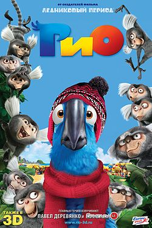

Рио (2011)
Жанр: Мультфильм, Мюзикл, Приключения, Комедия, Семейный
Страна: США, Бразилия
Описание: Домашний попугай Голубчик отправляется в Рио, чтобы спасти свой вид и пережить яркие приключения.
Жанр: Мультфильм, Мюзикл, Приключения, Комедия, Семейный
Страна: США, Бразилия
Описание: Домашний попугай Голубчик отправляется в Рио, чтобы спасти свой вид и пережить яркие приключения.